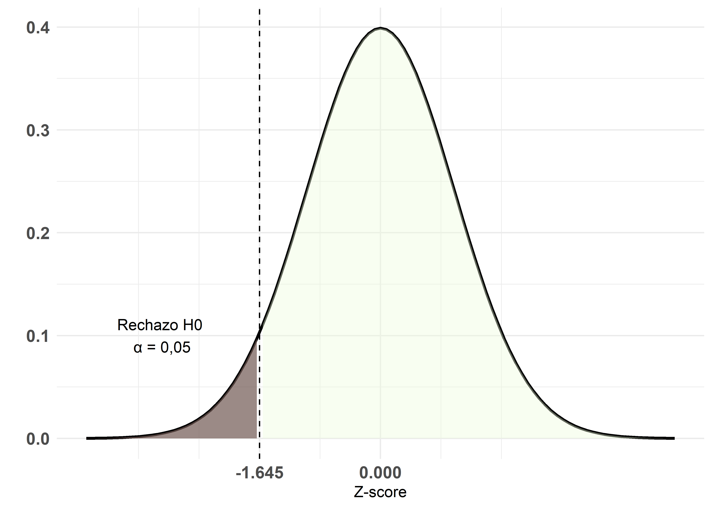
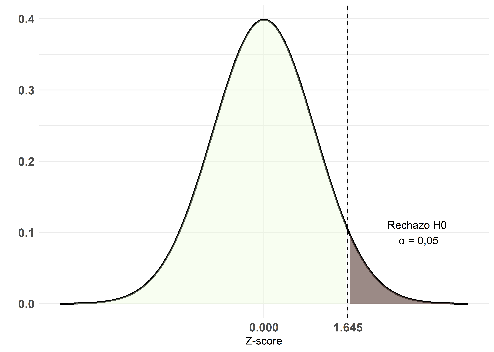
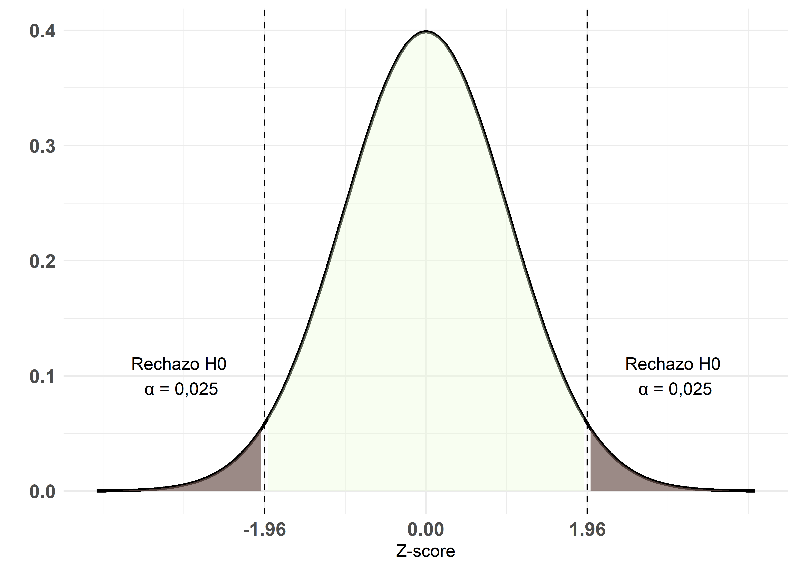

Introducción a la inferencia estadística
© 2025 Instituto Nacional de Epidemiología “Dr. Juan H. Jara” (ANLIS) - CC BY-NC 4.0


Fundamentos
La estadística inferencial es la rama de la estadística que permite extraer conclusiones sobre una población a partir de una muestra de datos. Este proceso se sustenta en dos procedimientos principales: la estimación y la prueba de hipótesis.
La población se define como el conjunto completo de individuos u observaciones de interés, mientras que la muestra es el subconjunto representativo de esa población, diseñado para reflejar sus características fundamentales. Para describir la población se utilizan parámetros, valores numéricos como la media poblacional \((\mu)\), mientras que los datos muestrales se resumen con estadísticos, por ejemplo, la media muestral \((\bar{x})\).

Estimación de parámetros
La estimación consiste en utilizar información muestral para inferir el valor de un parámetro poblacional. Se distingue entre la estimación puntual, que proporciona un único valor estimado (por ejemplo, \(\bar{x}\) como estimador de \(\mu\)), y la estimación por intervalos de confianza, que define un rango de valores en el cual se espera, con un nivel de confianza dado (habitualmente 95%), que se encuentre el parámetro. La fórmula típica del intervalo de confianza para la media es:
\[ 95\% IC = (\bar{x} -1,96~SE, \bar{x} + 1,96~SE) \]
donde \(SE\) es el error estándar de \(\bar{x}\) y 1.96 es el valor crítico derivado de la distribución normal (o t de Student en muestras pequeñas o cuando se desconoce la desviación estándar poblacional). Si bien existen ICs del 99%, un mayor nivel de confianza requiere una muestra más grande para mantener un intervalo estrecho y, de esta forma, lograr una mayor precisión en la estimación. El 95% de confianza representa un equilibrio entre el ancho del intervalo (precisión) y el tamaño muestral.
Pruebas de Hipótesis
Las pruebas de hipótesis (también conocidas como test o contrastes de hipótesis) permiten evaluar afirmaciones sobre parámetros poblacionales a partir de datos muestrales.
Cuando hablamos de hipótesis, es útil distinguir entre dos tipos principales:
Hipótesis de investigación: representan la pregunta o problema que motiva el estudio.
Hipótesis estadística: es la formulación cuantificable que se evalúa mediante métodos de inferencia estadística.
El contraste de hipótesis se basa en la comparación de dos hipótesis estadísticas:
Hipótesis nula \((H_0)\), que postula que no existen diferencias entre los grupos comparados (por ejemplo, \(\mu = \mu_0\)).
Hipótesis alternativa \((H_1)\), que plantea que existen diferencias entre grupos (por ejemplo, \(\mu \neq \mu_0,~ \mu > \mu_0~ ó~ \mu < \mu_0\)). Es equivalente a nuestra hipótesis de investigación y no puede aceptarse ni rechazarse de forma directa.
La hipótesis que se pone a prueba es \(H_0\). Para decidir si se la acepta o rechaza, se utilizan estadísticos de prueba que se comparan con un valor crítico determinado por el nivel de significancia \(\alpha\) (típicamente 0.05).
Estadístico de prueba
Es el valor calculado a partir de los datos muestrales que permite tomar una decisión sobre \(H_0\). Su elección depende del tipo de variable y del problema en estudio. Por ejemplo:
Para variables categóricas se utiliza el estadístico chi-cuadrado \((\chi^2)\).
Para variables numéricas, se emplean las distribuciones normal \((Z)\) o t de Student \((t)\).
Valor crítico
Se denomina región crítica o región de rechazo al conjunto de valores del estadístico de prueba que llevan al rechazo de \(H_0\).
El nivel de significancia (\(\alpha\)) representa la probabilidad de que el estadístico caiga en la región crítica cuando \(H_0\) es verdadera, lo cual constituye un error de tipo I.
El valor crítico es el umbral que separa los valores que llevan al rechazo de \(H_0\) de aquellos que no. Representa la probabilidad de obtener un resultado igual o más extremo que el observado, bajo la suposición de que \(H_0\) es verdadera. En una prueba de hipótesis, es el menor valor de \(\alpha\) para el cual \(H_0\) puede rechazarse.
Para ilustrar la región crítica, se suele usar la gráfica de la distribución normal, donde el p-valor corresponde al área bajo la curva en la región de interés.
En pruebas unilaterales, se considera el área bajo una sola cola de la distribución. El valor crítico es 1,645 ó -1,645, lo que implica que hay un 5% de probabilidad de observar un valor mayor (o menor) que ese umbral si \(H_0\) es verdadera.
Test de cola izquierda \((H_1: \mu < \kappa)\)
Test de cola derecha \((H_1: \mu > \kappa)\)

En pruebas bilaterales \((H_1: \mu \neq \kappa)\), se reparte el 5% en ambas colas de la distribución, y el valor crítico es 1,96. Esto indica que hay un 2,5% de probabilidad en cada cola de obtener un valor más extremo si \(H_0\) es verdadera.

p-valor
El p-valor representa la probabilidad de obtener un resultado igual o más extremo que el observado, bajo la suposición de que \(H_0\) es verdadera. Es decir, el p-valor indica cuán compatibles son los datos con la hipótesis nula. En un test de hipótesis, se rechaza \(H_0\) cuando el p-valor es menor que el nivel de significancia \(\alpha\), lo que apoya la hipótesis alternativa (\(H_1\)).
Potencia estadística
La potencia estadística es la probabilidad de rechazar \(H_0\) cuando esta es falsa, es decir, de detectar un efecto real. Se calcula como 1 menos la probabilidad de cometer un error de Tipo II o \(\beta\) y es directamente proporcional al tamaño muestral y inversamente proporcional a la varianza de las observaciones.
Aplicaciones e Interpretación
La inferencia estadística permite responder preguntas de investigación tales como:
¿Es significativa la diferencia entre dos medias?
¿Existe una relación entre dos variables?
¿Cómo se distribuyen los datos respecto a un parámetro de interés?
Al aplicar estos métodos, es crucial tener en cuenta la calidad y representatividad de la muestra, así como la validez de las asunciones subyacentes (normalidad, homogeneidad de varianzas, etc.).
Este apunte sintetiza los conceptos esenciales y las herramientas básicas para llevar a cabo un análisis inferencial, que sirve de base para la interpretación de modelos y resultados en análisis cuantitativos. Quienes necesiten profundizar más en los temas, les recomendamos consultar las siguientes fuentes:
Manual de Epidemiología: Fundamentos, Métodos y Aplicaciones (Epidemiología 2015): Capítulo 3.
Estadística 12A Edición (Triola 2018): Capítulos 8 y 9.
Referencias
Epidemiología, Instituto Nacional de. 2015. MANUAL DE EPIDEMIOLOGÍA: FUNDAMENTOS, MÉTODOS Y APLICACIONES. Edición 2015.
Triola, Mario F. 2018. ESTADÍSTICA Decimosegunda Edicion. Pearson Educación de México, SA de CV.